Code Lab¶
Introduction¶
Code is a cloud-based integrated development environment (based on VSCode) on DevOps Loop, with which you can write, compile, build, and debug software applications in a so-called dev container, accessible directly from a web browser. The editor provides a completely configured development environment with preinstalled extensions, tools, and libraries. You can start coding without the need to set up the environment on your local machine.
To learn more about DevOps Code please have a look at the documentation.
How to work with Code¶
Switch to Code¶
| Step | Details | Additional Information |
|---|---|---|
| 1 | You can always switch using the central app switcher on the top left of your screen |  |
| 2 | Overview Page of Code is shown with two tabs. | 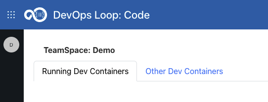 |
| 3 | One for Running Dev Containers | |
| 3.1 | Which may be empty when no Dev Container has been started | 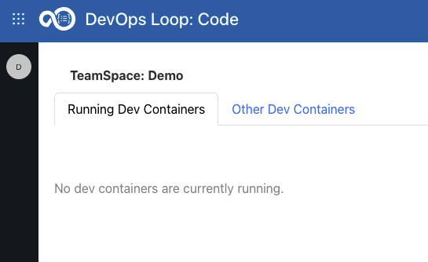 |
| 3.2 | Or all running Dev Containers with detailed Information is shown | 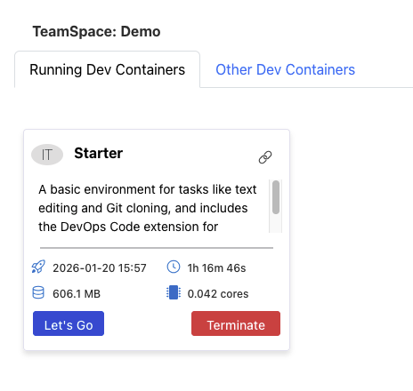 |
| 3.3 | Open the running container by clicking on Let's Go Button | |
| 3.4 | If no more needed press Terminate button to shutdown and remove it | |
| 4 | And another for all available types of Dev Container | 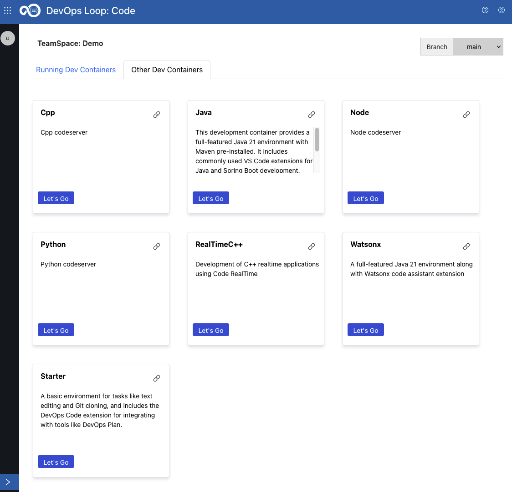 |
| 4.1 | By clicking on Let's Go Button a Dev Container (for example WatsonX) it will be instantiated | |
| 4.2 | and a message will be shown in a new window | 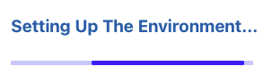 |
| 4.3 | it takes a few seconds till your environment is setup and running, please be patient | |
| 4.4 | Code is shown (example: WatsonX) | 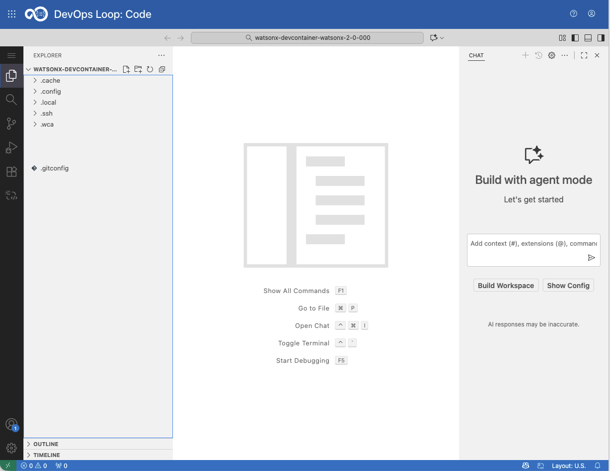 |
{kind=link}
{kind=link}
{kind=link}
{kind=link}
{kind=link}
{kind=link}
{kind=link}
{kind=link}
How to use Code¶
If Code has not been opened yet Open the repository with Code from Control Repo view
| Step | Details | Additional Information |
|---|---|---|
| 1 | Talk about Code | |
| 2 | change some code and save the changes to be able to commit to Control | |
| 2.1 | TODO: add steps with screenshots here! | |
| 3 | Or optionaly Use WCA to explain code and generate some new code | 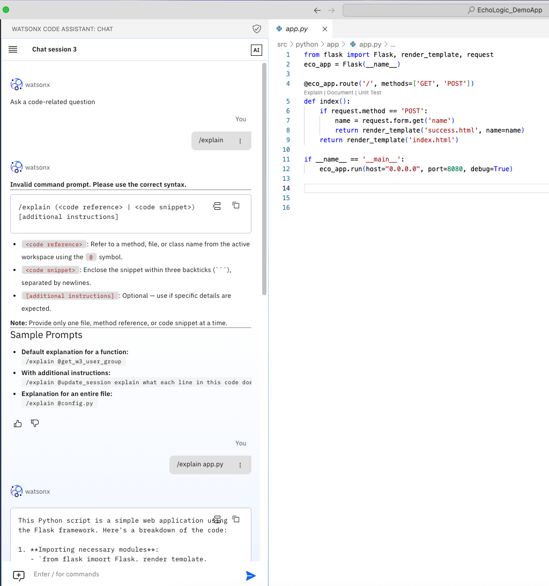 |
| 3.1 | here an example | 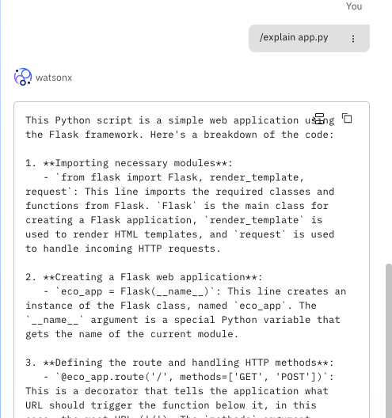 |
| 4 | Add comment with work item number | 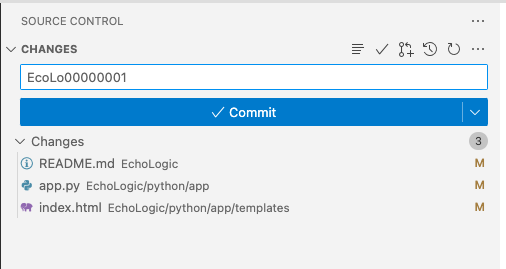 |
| 5 | Click on Commit&Push by opening the Commit Button | 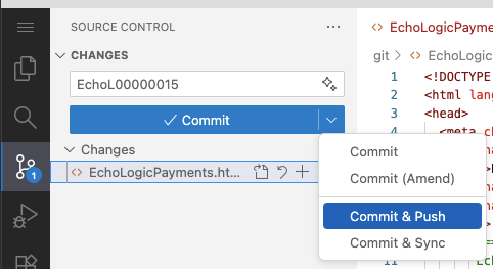 |
| 5.1 | a message might appear about staging changes, press the Always button | 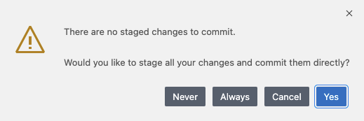 |
| 5.2 | a message might appear about fetching changes from git, press Fetch | 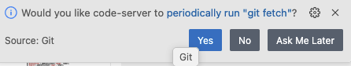 |
{kind=link}
{kind=link}
{kind=link}
{kind=link}
{kind=link}
{kind=link}
Close and terminate Environment¶
Your development environment runs in it's own pod and uses resources. When you are finished with your work it is recommended to terminate the Environment.
NOTE: your session will not be terminated when you switch between capabilities or just close your browser!
Use the Logout icon 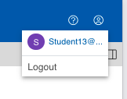
{kind=link}
{kind=link}
Click on "Yes, terminate it" to shutdown the pod, which will delete all unsaved or pushed changes! Or you can decide to keep it alive with "No, let it run" if you want to continue working later.